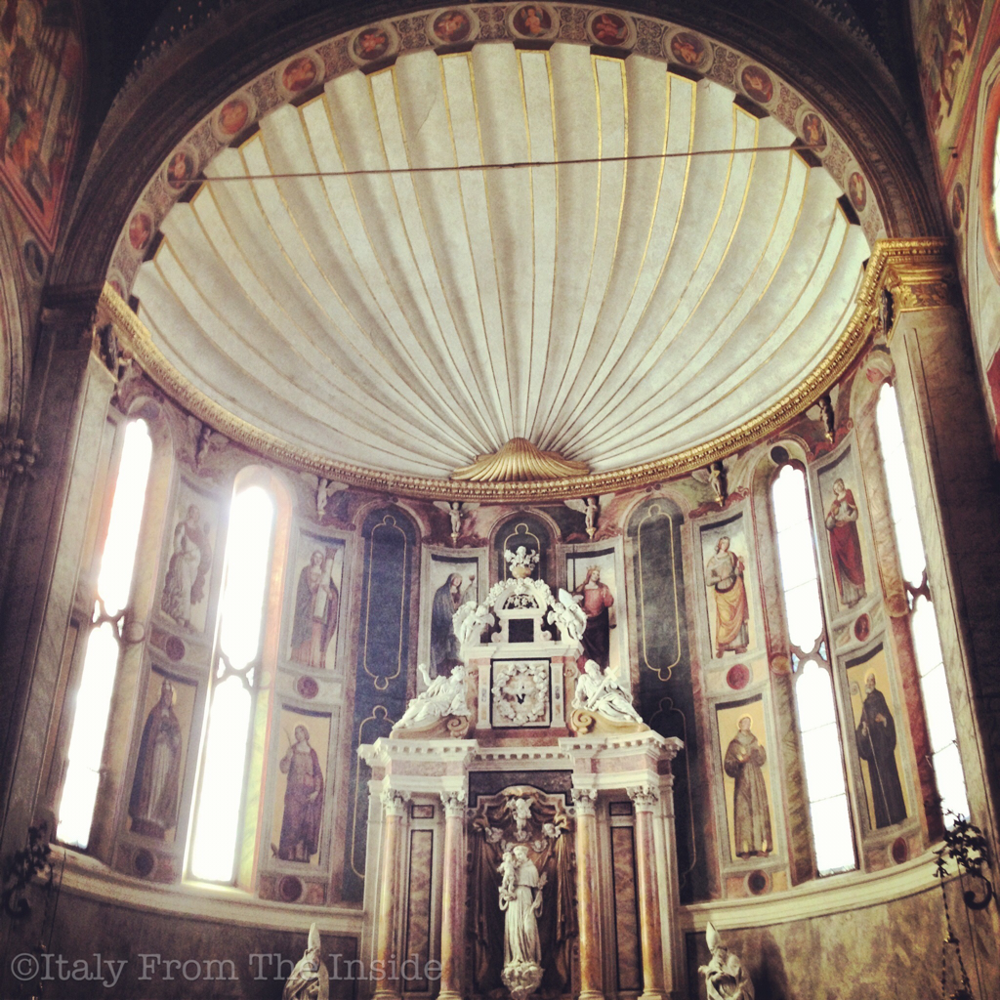

A dome shaped like a shell is an artistic expression of extraordinary beauty and simplicity. If you happen to be near Padua, make sure to pay a visit to the Duomo of Montagnana, a small, charming town surrounded by a very well preserved medieval wall.